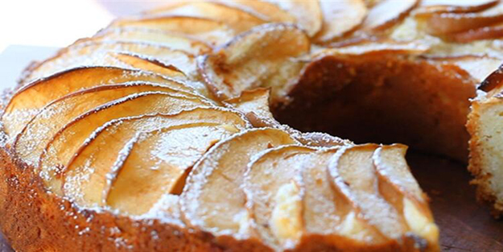

ELMALI TARÇINLI KEK TARİFİ

MALZEMELER
- 3 adet yumurta
- 1 Su bardağı şeker
- 1/2 çay bardağı süt
- 3 su bardağı un
- 1 çay bardağı sıvı yağ
- 1 paket vanilya
- 1 paket kabartma tozu
- 2 adet elma
- 1 tatlı kaşığı tarçın
HAZIRLANIŞI
- Yumurta ve şekeri çırpma kabına alalım ve mikserle güzelce çırpalım.
- Sıvı yağ,süt ekleyip çırpmaya devam edelim.
- Un, vanilin ve kabartma tozunu ekleyip çırpmaya devam edelim.
- Hazırladığımız harcı borcama dökelim.
- Elmaların kabuğunu soyup dilimleyeliim harcın üzerine dizelim.
- Önceden ısıtılmış 180 derece fırında 40 dk pişirelim.
- Soğuduktan sonra üzerine tarçın serpelim.
- AFİYET OLSUN...